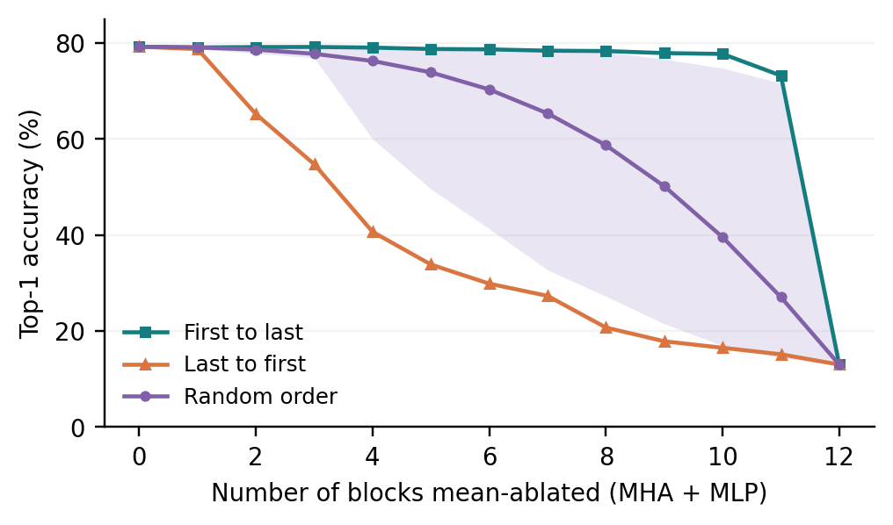
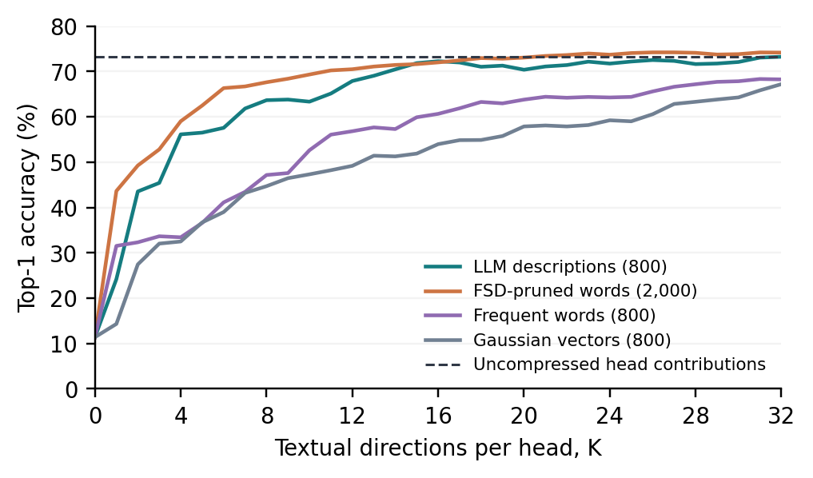
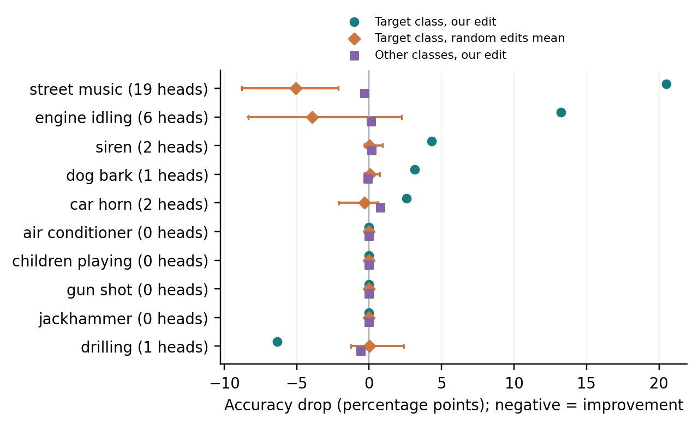

Finding Textual Explanations of CLAP Audio Encoder Attention Heads
University of Trento · Fondazione Bruno Kessler
What do CLAP’s attention heads contribute to its audio representation? We express their direct contributions in the shared audio–text space, then describe their variation with a small set of textual directions.
From internal writes
to readable descriptions
HTS-AT merges tokens between stages and uses a nonlinear output projection. We freeze observed normalization scales and ReLU gates to obtain an input-conditioned affine readout. Its linear part maps independently recorded residual writes into CLAP’s output space.
TextSpan then selects descriptions whose directions explain the variation of each head’s contributions over audio clips. The coefficients remain signed: a description is a direction of variation, not a detector label.
64 heads
Two attention blocks in the encoder’s last stage.
5,929 fit recordings
Clotho audio only. Its captions are not used.
7,962 evaluation clips
UrbanSound8K, excluding all shared Freesound sources with the fit set.
Three views of the same model
These are direct-contribution analyses and a separate internal intervention. Algebraic conservation of the contributions does not establish that an edit is causally faithful.



Listen through the head atlas
Explore the first three descriptions of every head. Each preview is a Clotho fit recording with a large positive centered coefficient along that fitted direction, restricted to CC0 recordings. Different ranks within a head use different sources. A recording illustrates the direction; its content need not literally match the description.
Mappings to UrbanSound8K were frozen before the class-group experiment. “None” is an explicit empty mapping, not missing data. Mappings beyond rank 3 were not made. The six highlighted head summaries are qualitative, selected examples.
Run the study, keep the inputs fixed
The repository contains one small Python package, the exact dictionary and mappings, the two generation prompts, all sample/source IDs, frozen random groups, selected qualitative heads, and reference CSVs. No API key or new LLM call is needed to reproduce the paper.
git clone https://github.com/SebastianFia/clap-textspan.git cd clap-textspan # See README for the pinned model environment and datasets. python -m clap_textspan smoke python -m clap_textspan run
To redraw the figures without a GPU or datasets, use python -m clap_textspan plots --reference. The full run starts from audio waveforms, verifies their hashes, caches stage inputs and contributions, refits every span, and compares the results to the reference CSVs.
Credits
Our study adapts TextSpan to LAION-CLAP. The fit recordings come from Clotho v2.1, collected by Drossos, Lipping and Virtanen from Freesound. Only CC0-licensed recordings are redistributed here, as compressed center-window excerpts. Evaluation uses UrbanSound8K by Salamon, Jacoby and Bello. No UrbanSound audio is hosted on this page.